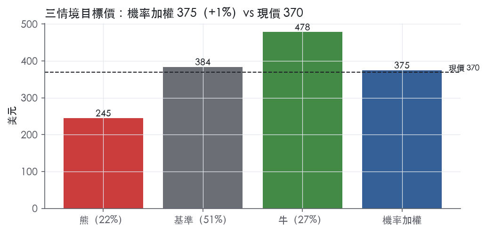
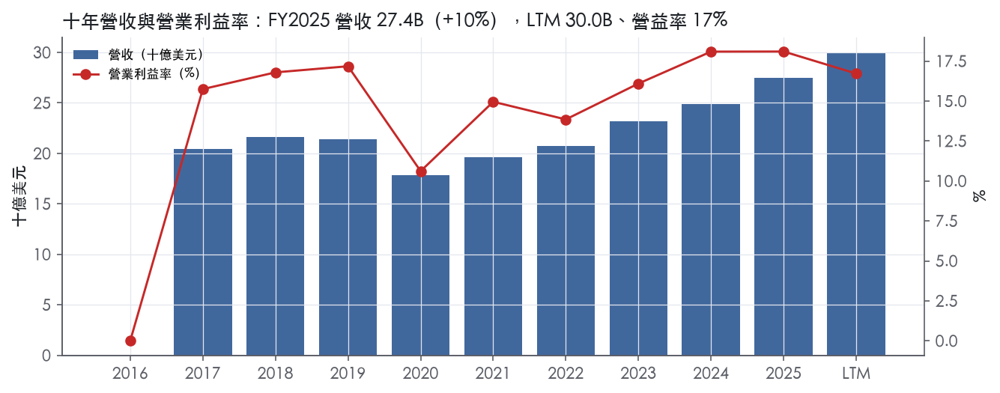
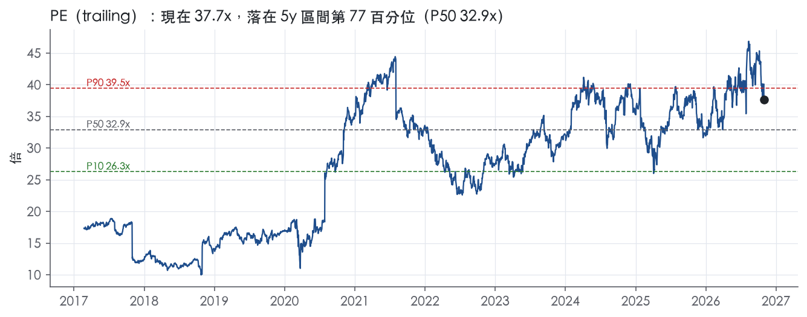
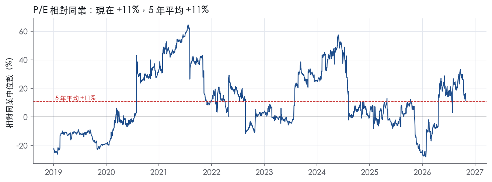
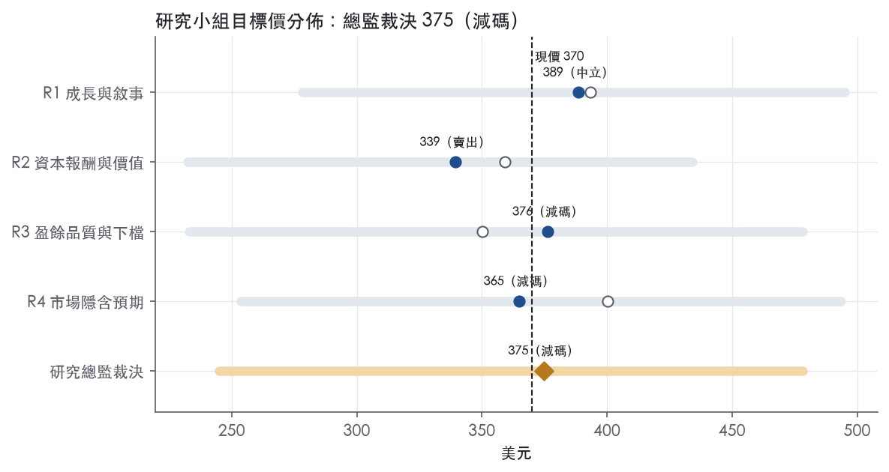

評等總表 › 工業 › ETN
訂單撐成長、槓桿壓倍數，中性｜評等 減碼｜目標價 375
| 評等 | 減碼（邊界，鄰近中立） |
| 12 個月目標價 | 375 美元 |
| 現價 | 369.97 美元（2026-10-30） |
| 預期報酬 | 股價 +1.3%＋股息 1.2%＝總報酬 +2.4%；同業籃門檻 10.0%，超額 -7.5% |
| 估值方法 | P/E 30.0x，套在第 5–8 季的EPS（也就是一年後的未來四季） |
| 三情境 | 熊 245／基準 384／牛 478 |
| 研究流程 | 四位研究員兩輪辯論＋研究總監裁決 |
| 資料來源 | SEC EDGAR XBRL、Tiingo、FRED（全免費） |
訂單撐成長、槓桿壓倍數，中性（研究總監裁決，四位研究員兩輪辯論後）
評等 減碼（邊界，鄰近中立）｜12 個月目標價 375 美元（總監三情境機率加權 379 與研究員中位數 371 各半）｜現價 369.97（2026-10-30）
預期報酬：股價 +1.3%＋股息 1.2%＝總報酬 +2.4%。同業籃門檻 10.0%，超額 -7.5%，離中立的分界不到三個百分點，屬邊界評等（落在其他級距的機率約三成）。
估值方法：P/E 30.0x，套在第 5–8 季的EPS（也就是一年後的未來四季）。三情境：熊 245（22%）／基準 384（51%）／牛 478（27%）。
立場中性而評等減碼：評等看的是「預期總報酬 2.4% − 同業籃門檻 10.0%」＝超額 -7.5%，不是絕對漲跌；中性但超額偏離門檻，代表情境機率或股利把報酬推離門檻。
什麼會讓研究總監改變看法：2027 年 2 月指引有機成長 ≥13% 且 RMT 帶回現金使淨負債／EBITDA 於 2027 年中回到 2.5x 以下，倍數回到市場持平 33x 並轉多；Q3 GAAP EPS 低於 2.77 或 Electrical book-to-bill 跌破 1.0，向 R4 的 26x 與熊情境靠。
| 過去四季（實際，FY2026Q2） | 未來四季 | 第 5–8 季 | 第 9–12 季 | |
|---|---|---|---|---|
| 營收（B） | 30.0B | 34.8B | 38.0B | 40.2B |
| 營收成長 | 15.5% | 16.0% | 9.0% | 6.0% |
| 營業利益率 | 16.7% | 17.0% | 17.3% | 17.6% |
| EPS（美元） | 9.81 | 11.41 | 12.79 | 13.91 |
| EPS 成長 | -1.1% | 16.2% | 12.1% | 8.7% |
| 每股股息（美元） | 4.28 | 4.28 | 4.28 | 4.28 |
| P/E（現價） | 37.7x | 32.4x | 28.9x | 26.6x |
| 股息殖利率（現價） | 1.2% | 1.2% | 1.2% | 1.2% |
過去四季為申報數字；預測為研究總監的假設、程式計算。倍數與殖利率都用現價計算，用來看現價對應各期獲利的高低。
| 情境 | 機率（歷史） | 故事 | 未來四季營收成長 | 第 5–8 季營益率 | 倍數 | 目標價 | 股價漲跌 |
|---|---|---|---|---|---|---|---|
| 熊 | 22%（12%） | 風險表第 2 條資料中心資本支出暫停使 Electrical book-to-bill 跌破 1.0，疊加第 1 條 RMT 延遲或喪失免稅資格（10-K Item 1A），槓桿 3.21x 降不下來、新產能固定成本去槓桿，倍數退到前瞻帶 P50 之下 | 12.0% | 16.5% | 22.0x | 245 | -33.8% |
| 基準 | 51%（58%） | 併購滿週年後成長回到高個位數、Mobility 如期分拆、費用退場但攤銷永久，前瞻 P/E 由 33.3x 收斂到 30x | 16.0% | 17.3% | 30.0x | 384 | 3.7% |
| 牛 | 27%（30%） | 有機雙位數延續、分部利潤率超過指引上緣、RMT 帶回現金降槓桿，倍數守在市場持平 33.3x 附近 | 17.5% | 18.5% | 34.0x | 478 | 29.3% |
目標價由程式依研究總監的驅動與倍數計算；機率由研究總監給定。括號內是歷史頻率：把這檔股票過去十年 12 個月報酬的波動形狀，置中在基準情境，結果落在各情境附近的比例。

四位研究員用不同方法各自估值，回應研究總監的質疑後交出第二輪，最後由總監逐點裁決。各研究員的主張見第七章，裁決理由見第八章，完整論證見《研究底稿》。
| 立場（一輪→二輪） | 加權目標價（一輪→二輪） | 評等（一輪→二輪） | 第二輪倍數 | 熊～牛目標價 | |
|---|---|---|---|---|---|
| R1 成長與敘事 | 中性→中性 | 393→389 | 中立→中立 | 34.0x | 278～495 |
| R2 資本報酬與價值 | 看空→看空 | 359→339 | 減碼→賣出 | 32.9x | 232～434 |
| R3 盈餘品質與下檔 | 中性→看空 | 350→376 | 減碼→減碼 | 30.0x | 233～478 |
| R4 市場隱含預期 | 中性→看空 | 400→365 | 中立→減碼 | 26.0x | 254～493 |
| 研究總監裁決 | 中性 | 375 | 減碼 | 30.0x | 245～478 |
目標價由程式依各自的驅動與倍數計算；評等＝機率加權總報酬 − 同業籃門檻。
Eaton 是一家智能電源管理公司，致力於保護環境並改善全球人類的生活品質¹。公司為資料中心、公用事業、工業、商業、機械製造、住宅、航太與移動市場製造產品¹。公司成立於 1911 年，2025 年營收達 27.4B 美元，服務 180 個國家的客戶¹。公司明言正在搭上電氣化、數位化、北美再工業化與大型專案成長，以及全球基礎設施支出增加等趨勢，藉此擴大終端市場並為未來多年成長定位¹。Eaton 本質上是一家把電力價值鏈從電網端一路做到終端裝置的電氣化＋航太雙核心公司，資料中心與公用事業是目前最大的需求引擎。
公司目前依 10-K 揭露分為 Electrical Americas、Electrical Global、Aerospace、Vehicle、eMobility 五個報告分部，2026 年第一季起 Vehicle 與 eMobility 已合併為新的 Mobility 分部¹。Electrical 部門（Americas＋Global）協助客戶以可靠、高效、安全且可持續的方式管理電力，從電網到住宅、建築、資料中心與工業場域都涵蓋在內¹。2025 年 Electrical 兩個分部 22% 的銷售來自六大電氣產品與系統服務的大客戶¹。Aerospace 分部提供商用、軍用與太空市場的航太技術組合，2025 年 20% 的銷售來自三家大型飛機原始設備製造商（OEM）¹。Vehicle 分部服務汽車、商用車、售後市場與非公路市場，2025 年 37% 銷售來自四家大型車輛及相關零件 OEM¹；eMobility 分部 2025 年 18% 銷售集中在一家大型車輛 OEM¹。從最新一季（FY2026Q2）的 8-K 揭露數字看，Electrical Americas 單季營收 3,951M 美元，Electrical Global 2,517M 美元，兩者合計占當季總營收 8,531M 美元的大部分；Aerospace 1,222M 美元、Mobility 841M 美元為相對較小的分部²。公司在 2026 年 1 月宣布計畫將 Mobility 業務（即原 Vehicle 與 eMobility）分拆為獨立上市公司，隨後在同年 7 月公告以 Reverse Morris Trust 架構執行這項分拆，預計 2027 年第一季完成，分拆後對組織的有機成長與利潤率將有正面貢獻²。公司 2025 年完成 Fibrebond、Resilient Power Systems 收購，並宣布收購 Boyd Thermal，2026 年 1 月再完成 Ultra PCS 收購，全部圍繞資料中心模組化電力、固態變壓器技術、液冷散熱與次世代航太系統佈局¹。Eaton 的分部策略很清楚：把資本持續投向電氣與航太這兩個高成長、高利潤的板塊，同時把成長較慢的 Mobility 業務切出去，這是一次典型的組合優化動作。
公司服務對象高度集中於大型工業與 OEM 客戶，而非終端消費者。Electrical 兩個分部 22% 銷售來自六大客戶，Aerospace 20% 集中於三家飛機 OEM，Vehicle 37% 集中於四家車輛 OEM，eMobility 18% 集中於單一 OEM，顯示各分部客戶集中度都不低，尤其 Vehicle 與 eMobility 依賴少數大客戶的風險最明顯¹。地理上，公司服務全球 180 個國家的客戶，營收規模達 27.4B 美元¹。10-K 並未揭露各地區營收占比的具體數字，僅說明 Electrical 分部的銷售在正常經濟週期中第一季通常較低、第三與第四季較高¹。通路方面 10-K 未在 Item 1 進一步揭露細節，僅指向財報附註中的分部資訊¹。原物料採購方面，公司主要仰賴鐵、鋼、銅、鎵、鋁、鉛、銀、金、鈦、橡膠、塑膠、電子元件、化學品與流體，並向多家供應商採購，正常情況下取得原料無困難¹。公司全球約有 97,000 名員工，其中 Electrical Americas 35,000 人、Electrical Global 26,000 人、Aerospace 14,000 人、Vehicle 12,000 人、公司總部 10,000 人¹，人力配置顯示 Electrical 事業群是目前組織規模最大、資源投入最多的核心引擎。
過去四個財季（FY2025Q3 至 FY2026Q2），Eaton 的營收與訂單動能持續加速，且邊際利潤率因 Mobility 分拆與高毛利業務占比提升而結構性改善。FY2025Q3 營收 6.99B 美元，年增 10.1%，營益率 18.6%（is.revenue、is.ebit 系列，FY2025Q3）。FY2025Q4 營收 7.05B 美元，年增 13.1%，營益率 18.7%（FY2025Q4 資料包）。FY2026Q1，公司營收創紀錄達到 7,451M 美元，較 2025 年同期的 6,377M 美元成長 17%，其中有機成長 10%，超越指引上緣，公司並完成 11B 美元的策略性收購，包括 Boyd Thermal 與 Ultra PCS³。該季分部利潤率 22.7%，優於指引區間但較去年同期下滑 120 個基點，營運現金流 507M 美元、自由現金流 314M 美元，分別年增 113% 與 245%³。公司當時將 2026 全年有機成長指引從中值 8% 上調至 10%，並預期第二季有機成長 9-11%、分部利潤率 22.6-23.0%、EPS 2.29-2.39 美元、調整後 EPS 3.00-3.10 美元³。FY2026Q2，公司營收再創紀錄達到 8,531M 美元，較去年同期的 7,028M 美元成長 21%，其中有機成長 14%，優於指引上緣；分部利潤率 23.1%，同樣優於指引上緣，但較去年同期下滑 80 個基點，Electrical Americas 利潤率季增 190 個基點²。該季營運現金流 1.1B 美元、自由現金流 874M 美元，分別年增 23% 與 22%²。公司同時宣布以 Reverse Morris Trust 方式分拆 Mobility 業務，預計 2027 年第一季完成，並將全年有機成長指引再上調，第三季指引為有機成長 13.5-15.5%、分部利潤率 24.6-25.0%、EPS 2.77-2.87 美元、調整後 EPS 3.46-3.56 美元²。LTM 口徑（至 FY2026Q2）營收已達 30.02B 美元、EBITDA 6.21B 美元、自由現金流 3.93B 美元（ltm.revenue、ltm.ebitda），顯示公司營收與現金流規模在最近四季內明顯跨越新台階。
公司將自己定位為正在資料中心與公用事業市場動能之上、同時受惠於商用航太與國防成長週期的電氣化與數位化受益者¹。CEO Paulo Ruiz 在 FY2026Q2 法說中表示，公司在第二季加速了動能，憑藉強勁的有機成長交出創紀錄的銷售與穩健的獲利，紀律化執行帶動利潤率季度改善，尤其是 Electrical Americas，資料中心仍是關鍵成長驅動力，同時各終端市場需求都強勁²。公司將 Mobility 分拆定位為「投資組合轉型的下一步」，目的是進一步聚焦在成長更快、利潤率更高的 Electrical 與 Aerospace 業務，以推動長期價值創造²。在收購策略上，公司明確表示其紀律化併購策略是「透過收購高成長、高利潤市場中差異化技術來投資成長」，Boyd Thermal 與 Ultra PCS 即屬此類佈局³。整體看，Eaton 把自己講成一台「電氣化+數位化」雙引擎機器，資料中心與公用事業是短期最大催化劑，航太景氣循環是第二動能，Mobility 分拆則是去蕪存菁的組合優化動作。從最近四季的訂單與 backlog 數據（Electrical Americas 訂單滾動年增 41%、Electrical Global 33%、Aerospace 17%）來看，公司對 Electrical 與 Aerospace 兩大核心業務的成長敘事目前有扎實的訂單支撐，而非單純的指引喊話。分拆完成後公司規模會縮小但結構更乾淨，是否能維持目前兩位數有機成長速度，仍需觀察資料中心資本支出周期是否持續。

Eaton 評為窄護城河：我們有把握未來 5 年以上 ROIC 仍高於資本成本，但十年數據撐不起 10 年以上的把握。優勢主要來自電氣與航太產品的規格綁定與服務黏著，再加上百年品牌與產業領導地位；目前沒有可量化的成本優勢。趨勢判為穩定：FY2023 起 ROIC 連續攀升，但 2026 年上半年的大型併購與利潤率回落抵銷了這股改善，所以看不出明確變寬或變窄的方向。
Eaton 的護城河建立在轉換成本與無形資產兩類，其餘三類缺乏證據，不列入。
轉換成本：航太分部的主要競爭方式是總持有成本、產品與系統效能、品質、設計工程能力與準時交貨¹。公司在該分部「就許多產品與平台而言」被視為市場領導者之一¹。「平台」與「設計工程能力」並列為競爭要素，代表 Eaton 的零組件在機型設計階段就寫進規格；機型生命週期內換供應商必須重新驗證，這是典型的轉換成本，也是全公司最硬的一段護城河。電氣分部的競爭方式包含產品與系統效能、技術、客戶服務與支援¹。配電系統裝進資料中心、廠房與電網之後，後續擴充與維修傾向沿用同一套系統與服務體系，形成較弱但真實的黏著度。
無形資產：公司認為專利、商號、商標、機密資訊與營業秘密等智財對整體業務具有重大價值¹。公司成立於 1911 年，服務 180 個國家的客戶¹，在電氣分部許多產品上被視為市場領導者之一¹。配電設備故障的代價遠高於設備本身的價格，客戶願意為品牌與可靠紀錄付溢價，這是 Eaton 無形資產的主要形式。不過，管理層認為任何單一智財權的喪失或到期，本身都不會對合併財報或各分部造成重大影響¹。因此專利不是護城河核心，品牌與裝機基礎才是。
未列入的類別：Item 1 沒有揭露單位成本、產能或市占率，成本優勢與效率規模都缺乏證據。產品價值不會隨使用者人數增加，網路效應不成立。
數字支持「窄」，不支持「寬」。ROIC 十年平均 11.9%，高於資本成本代理值 10.0%，平均超額只有 2.0%。ROIC 有資料的 9 年中只有 6 年高於資本成本：FY2020 為 6.7%，FY2021 為 9.4%，FY2022 為 9.8%。連續三年低於門檻，直接否決寬評級。
穩定度則站在護城河這一邊。毛利率標準差 2.5%、營業利益率標準差 2.2%、ROIC 標準差 2.6%。即使在景氣最差的年度，毛利率最低也只到 30.5%，代表衰退期定價力沒有崩，這是護城河存在的直接證據。營業利益率的區間是 10.6% 到 18.1%，波動主要來自營運槓桿，屬景氣循環，不是競爭侵蝕。
數字與主張有兩處衝突。第一，資本成本代理值用的是現在的 10 年債殖利率 4.98%，FY2020 到 FY2022 的實際資本成本應低於 10.0%，所以那三年的缺口有一部分是代理值造成的假象，這是我們沒有下修到「無」的理由。第二，近兩季利潤率明顯回落：FY2026Q1 毛利率 35.6%、營益率 16.3%，FY2026Q2 進一步降到 33.5% 與 14.0%，毛利率已低於十年平均 34.1%。FY2023 到 FY2025 的 ROIC 依序為 12.4%、14.6%、15.2%，改善是實在的；但在新收購的報酬被驗證之前，我們不把它認定為護城河變寬，趨勢維持「穩定」。
最大威脅是併購稀釋資本報酬，其次是大客戶的議價力。
併購稀釋：總債務從 FY2025Q4 的 9.89B 美元跳升到 FY2026Q1 的 21.13B 美元。公司 2025 年收購 Fibrebond 與 Resilient、宣布收購 Boyd Thermal，並於 2026 年 1 月 23 日完成 Ultra PCS 收購¹。投入資本大幅墊高，如果併購標的的獲利跟不上，ROIC 會被拉回資本成本附近，五年把握也會動搖。
客戶議價：2025 年電氣分部 22% 的銷售來自六家大客戶¹。電氣分部的主要競爭方式之一就是價格¹。資料中心客戶規模越大、集中度越高，越能壓縮 Eaton 的品牌溢價。
技術路線轉換：收購 Resilient 是為了加速固態變壓器技術在資料中心與儲能上的商業化¹。固態變壓器、液冷這類架構一旦換代，既有裝機基礎的黏著度可能重置；Eaton 選擇用併購卡位，而不是守著舊產品線，這本身是防守動作，但也表示舊優勢不保證延續。
智財到期：部分智財權未來會到期¹。由於專利不是核心，這一項的侵蝕力道有限。
Mobility 分拆會移除以產品、技術、全球服務與價格競爭、客戶集中度最高的業務¹，對剩餘公司的護城河是淨正面。
目標倍數相對同業應持平，不給溢價。窄護城河撐得起約 5 年的超額報酬期，但 ROIC 對資本成本的平均超額只有 2.0%，2026 年併購後的資本報酬也還沒被驗證；現行 P/E 37.7x 已落在自身五年第 76.7% 分位，不應在同業倍數之上再加碼。若 FY2026 下半年利潤率止跌，且併購後 ROIC 守在資本成本之上，再重新評估溢價。
| 指標 | 最新 | 十年平均 | 標準差 | 最低 | 最高 |
|---|---|---|---|---|---|
| ROIC | 15.2% | 11.9% | 2.6% | 6.7% | 15.2% |
| 毛利率 | 37.6% | 34.1% | 2.5% | 30.5% | 38.2% |
| 營業利益率 | 18.1% | 15.7% | 2.2% | 10.6% | 18.1% |
| FCF 利潤率 | 12.9% | 11.6% | 2.2% | 8.1% | 14.3% |
| ROE | 21.6% | 15.8% | 3.8% | 9.1% | 21.6% |
程式計算。資本成本代理值（10 年債＋5%）：10.0%；ROIC 平均減資本成本：2.0%；ROIC 有資料的 9 年中，高於資本成本 6 年。
LTM CFO／淨利 1.29x、FCF／淨利 1.03x，均為綠燈，十年平均亦維持在 1.0x 以上，代表報表盈餘長期有現金支撐。應計比率 LTM -2.0%、近三年 -1.2%、十年 -1.4%，全部為負值且落在「≤0.0% 綠」區間，顯示淨利沒有靠應計項目灌水，反而現金流優於淨利。但季度數據顯示現金轉換並不穩定：FY2025Q1 CFO 僅 0.24B、FY2026Q1 僅 0.51B，遠低於同期淨利（0.96B、0.87B），屬於典型的第一季營運資金季節性，第三、四季會回補（FY2025Q3 CFO 1.35B、Q4 1.97B）。整體看，現金品質沒有長期跟不上盈餘的問題。
FY2026Q2 GAAP 稀釋 EPS 2.11 美元，調整後（Adjusted）EPS 為 3.15 美元，差距主要來自三項排除：無形資產攤銷費用稅後每股 0.50 美元、併購與處分相關費用稅後每股 0.49 美元、多年重組計畫費用稅後每股 0.05 美元²。金額換算：淨利 821M，排除併購/處分費用稅後 190M、重組費用稅後 19M、無形資產攤銷稅後 198M，加回後調整後淨利 1,228M²。上半年累計：排除併購/處分 278M、重組 49M、攤銷 308M，調整後淨利 2,322M，對比 GAAP 淨利 1,687M²。
這三項中，無形資產攤銷（0.50/股，單季最大項）本質上是過去收購溢價的非現金分攤，排除有一定合理性，但只要公司持續用併購驅動成長（Fibrebond、Resilient、Ultra PCS、Boyd Thermal 協議皆在 2025–2026 完成或宣布）¹，攤銷就是「經常性的非現金成本」，不應完全視為一次性。併購與處分費用（0.49/股）與交易時點直接相關，季度間波動大（去年同期僅 0.14/股），屬於真實現金或準現金成本，分析師應部分計入真實成本而非全數剔除。重組費用（0.05/股）金額小，屬一次性，可接受排除。整體而言，調整後 EPS 把三項全部加回，幅度偏寬，GAAP 與 Adjusted 的差距（本季近 50%）主要由併購活動本身造成，而非一次性意外，估值不宜全盤採信 Adjusted 數字。
淨負債從 FY2025Q4 的 9.89B 美元總債務區間，於 FY2026Q1 一口氣跳升到 21.13B（總債務），Q2 微降至 20.61B，現金僅 0.48B（資料包）。對應快照淨負債 19.92B、LTM EBITDA 6.21B，淨負債／EBITDA LTM 達 3.21x，大幅高於近三年平均 1.42x 與十年平均 1.78x，觸發紅燈。這筆舉債時點與 Ultra PCS 收購（2026-01-23 完成）、以及公司同時進行的回購與 Mobility 業務分割準備重疊¹，屬於併購與股東回饋共同墊高的槓桿，而非經營惡化。利息保障倍數 LTM 11.3x 仍遠高於 8.0x 綠燈門檻，顯示即便負債翻倍，付息能力尚未受壓，但近三年平均 26.7x 與十年平均 21.9x 的對比也說明這一倍數正在快速收斂。資本配置上，（股利＋回購）／淨利 LTM 58.0%，近三年 77.8%，十年平均 92.8%，均為綠燈，顯示長期穩定回饋股東但未過度舉債發股息。公司 2025 年第四季以 193M 美元回購 0.5M 股⁴，2025 年 2 月核准的三年期回購計畫總額 9.0B 美元，截至 2025 年底剩餘額度約 7.6B 美元⁴。稀釋股數變動 LTM +0.1%、近三年平均 -0.8%，屬黃燈，顯示回購放緩甚至被選擇性股權發行（如併購發股）抵消，但幅度極小，不構成稀釋風險。
紅旗：淨負債／EBITDA 紅燈（LTM 3.21x，近三年平均 1.42x）。 這是真實且需要追蹤的槓桿上升，但可解釋：FY2026Q1 總債務由 9.89B 跳升至 21.13B，時點對應 Ultra PCS 收購完成（2026-01-23）與已宣布的 Boyd Thermal 收購協議¹，屬於併購驅動的一次性舉債，而非經常性經營現金流惡化。利息保障倍數同期仍維持 11.3x 綠燈，未出現付息壓力，且公司另有 Mobility 業務分割（Reverse Morris Trust 交易，預計 2027 年第一季完成）²，分割後有機會釐清資產負債表並降低合併槓桿。結論：此紅旗屬「可解釋但需持續觀察」，不是未解釋的結構性惡化，但在槓桿回落前應對估值倍數保守。
其餘指標均為綠燈或溫和黃燈，不構成額外紅旗：CFO／淨利、FCF／淨利、應計比率三項盈餘品質核心指標全線綠燈，無需額外說明；SBC／營收十年平均 0.0%，資料包未提供 LTM 數字（顯示「—」），無法評論其真實性，但以十年數值看非股權薪酬驅動的盈餘膨脹問題；稀釋股數黃燈幅度小，不影響結論；存貨成長與營收成長差距 FY2025 僅 +1.4pp，綠燈，顯示營運資金未侵蝕盈餘。
估值應以 GAAP 淨利為主軸，對 Adjusted EPS 打折使用，原因是併購與處分費用、無形資產攤銷在 Eaton 持續併購策略下具有經常性質，不是真正一次性。現金品質本身是高分質的加分項，CFO／淨利與 FCF／淨利長期 ≥1x 支持不打折扣用 GAAP 盈餘做估值基礎。但淨負債／EBITDA 3.21x 的跳升應限制 EV/EBITDA 類倍數的上緣，在槓桿回到 2x 以下之前，建議估值倍數取區間下緣或等待 Mobility 分割完成後重新評估資產負債表結構。
| 項目 | LTM | 近三年 | 十年 | 燈號 | 規則 |
|---|---|---|---|---|---|
| 營業現金流／淨利 | 1.29x | 1.12x | 1.25x | 綠 | ≥1.00x 綠、<0.80x 紅 |
| 自由現金流／淨利 | 1.03x | 0.90x | 1.01x | 綠 | ≥0.90x 綠、<0.60x 紅 |
| 應計比率（(淨利−CFO)／平均總資產） | -2.0% | -1.2% | -1.4% | 綠 | ≤0.0% 綠、>5.0% 紅 |
| SBC／營收 | — | — | 0.0% | — | ≤3.0% 綠、>8.0% 紅 |
| 淨負債／EBITDA | 3.21x | 1.42x | 1.78x | 紅 | ≤1.50x 綠、>3.00x 紅 |
| 利息保障倍數（營業利益／利息） | 11.3x | 26.7x | 21.9x | 綠 | ≥8.00x 綠、<3.00x 紅 |
| 稀釋股數年變動 | 0.1% | -0.8% | -1.7% | 黃 | ≤0.0% 綠、>3.0% 紅 |
| （股利＋回購）／淨利 | 58.0% | 77.8% | 92.8% | 綠 | ≥50.0% 綠、<0.0% 紅 |
| 存貨成長 − 營收成長（FY2025） | +1.4pp | — | — | 綠 | ≤5pp 綠、>15pp 紅 |
程式計算；燈號以 LTM（無則近三年平均）判定。
| 風險 | 觸發指標（看什麼數字、在哪裡看） | 對 EPS 的影響方向與粗略幅度 | 未來 12 個月發生機率（高／中／低） | 出處 |
|---|---|---|---|---|
| Mobility 分拆（Reverse Morris Trust）延遲、生變或未獲稅務中性認定 | 公司公告、監管核准進度、下一次 10-Q／8-K 是否重申 2027Q1 時程 | 方向：負向，幅度：大（涉及組織重組成本、稅務風險、管理層精力分散）⁵ | 中 | ⁵² |
| 資料中心／Electrical 訂單動能反轉，backlog 增速由高位回落 | Electrical Americas／Global 12個月滾動訂單年增率、book-to-bill（目前 1.2）、分部毛利率季變化 | 方向：負向，幅度：大（Electrical 兩分部合計占營收主要部分，FY2026Q2 Electrical Global 營收年增 44%，基期效應放大波動）² | 中 | 8-K 財報新聞稿（2026-07-31） |
| 終端市場（航太／汽車／工業）景氣下行，客戶集中度放大衝擊 | Vehicle／eMobility／Aerospace 分部營收年增率、各分部前幾大客戶訂單變化 | 方向：負向，幅度：中～大（Vehicle 37% 銷售集中四家OEM、eMobility 18% 集中單一OEM、Aerospace 20% 集中三家OEM）¹ | 中 | 10-K 年報 FY2025 Item 1（業務） |
| 關稅與貿易政策變動侵蝕毛利率 | 公司揭露的分部毛利率／營益率季度變化、原物料與關稅相關費用揭露 | 方向：負向，幅度：中（公司明言若無法轉嫁成本可能實質衝擊獲利）⁵ | 中 | 10-K 年報 FY2025 Item 1A（風險因素） |
| 收購整合（Fibrebond、Resilient、Boyd Thermal、Ultra PCS）未達預期協同效益 | 併購後商譽減損揭露、整合相關一次性費用（目前每股已有 0.49 美元併購/處置相關費用）、分部利潤率是否被拖累 | 方向：負向，幅度：中（FY2026Q2 已有每股 0.49 美元併購相關費用，顯示整合成本非零）² | 中 | 8-K 財報新聞稿（2026-07-31） |
Mobility 分拆執行風險排第一，因為它橫跨營運、財務與估值三個層面。 公司在 2026 年 1 月宣布分拆意向，7 月進一步公告以 Reverse Morris Trust 架構執行，預計 2027 年第一季完成，並明言此舉有助於聚焦 Electrical 與 Aerospace 兩大高成長高利潤業務²。但 10-K 明確列出一長串若未能如期完成的風險：法規核准延遲、管理層精力分散、留才困難、失去既有商業關係、預期外的拆分成本、以及若分拆無法如期完成時資本市場的負面反應⁵。公司雖意圖讓分拆對美國股東免稅，但 10-K 明言「無法保證分拆會符合免稅資格」⁵。這條風險之所以排第一，是因為它同時牽動 EPS（拆分成本、稅務風險）與倍數（市場對分拆後純電氣+航太組合的估值重新定價）。
Electrical 訂單動能反轉是第二大風險，因為公司目前的成長敘事高度依賴資料中心需求的持續性。 FY2026Q2 Electrical Americas 12個月滾動訂單年增 41%、Electrical Global 年增 33%，Electrical 整體 backlog 年增 43%，book-to-bill 維持 1.2²。10-K 本身也承認「技術顛覆可能衝擊我們的股價及/或對終端市場產生負面影響」，特別點名資料中心這類市場可能出現顛覆性技術的突然導入⁵。目前市場倍數（EV/EBITDA 26.4x，位於過去五年 66.9% 分位）已反映相當樂觀的持續成長預期（為 28.9x），若訂單或 backlog 增速明顯回落，倍數壓縮的風險不小。
終端市場客戶集中度是結構性風險，尤其在 Mobility 分拆前後更敏感。 業務概況章已指出，Vehicle 分部 37% 銷售集中於四家 OEM、eMobility 18% 集中單一 OEM、Aerospace 20% 集中三家 OEM、Electrical 兩分部合計 22% 集中六家大客戶¹。10-K 風險章節也明確點出「終端市場波動性可能對業務、財務狀況與營運結果造成重大不利影響」⁵。Mobility 分拆後，獨立公司本身的客戶集中度風險會更直接反映在其自身財報上，但分拆前這個風險仍留在 Eaton 合併財報內。
關稅與貿易政策是可觀測但難預測的毛利率風險。 10-K 明確指出「各國貿易政策的改變，包括關稅或制裁的實施，可能對業務與營運結果造成重大不利影響」，並點出即使是非進口商品也可能受到更廣泛的成本壓力波及⁵。公司表示會嘗試透過定價轉嫁成本，但若因此損及競爭地位，則「可能產生重大不利衝擊」⁵。這項風險的觀測指標是未來幾季分部毛利率與營益率是否出現非成長稀釋以外的下滑。
收購整合風險目前看幅度中等，但累積的併購活動量在增加。 公司 FY2026Q2 每股已有 0.49 美元是跟併購與處置相關的費用²，加上 2025 年以來完成 Fibrebond、Resilient、Ultra PCS 收購及宣布收購 Boyd Thermal，10-K 列出整合失敗的典型風險：管理層精力分散、文化與薪酬結構整合困難、未預期的或大於預期的或有負債⁵。這條風險不會單獨造成重大衝擊，但疊加分拆執行同時進行，管理頻寬風險會放大。
槓桿結構在最近兩季明顯上升，分拆後財務彈性可能受限。 資料包顯示總債務從 FY2025Q4 的 9.89B 美元跳升到 FY2026Q1 的 21.13B 美元、FY2026Q2 維持 20.61B 美元（bs 系列各期），同期淨負債升至 19.92B 美元。10-K 風險章並未單獨列出槓桿或利率敏感度風險，但在目前 10 年期美債利率 4.98%的環境下，債務規模倍增後的利息支出與再融資成本值得單獨監測。
估值倍數已處於歷史相對高位，任何成長不及預期的消息都可能放大股價反應。 目前 P/E 37.7x 位於過去五年 76.7% 分位、EV/EBITDA 26.4x 位於 66.9% 分位（band 系列），而 P/FCF 36.6x 卻僅在 24.6% 分位，顯示市場目前更多是用盈餘倍數而非現金流倍數在為股票定價。10-K 完全沒有討論公司自身估值水準的風險，但這代表任何前述風險（分拆延遲、訂單放緩）兌現時，股價的下修幅度可能高於過去五年的歷史經驗。
現價 369.97 對應 trailing（過去四季）P/E 37.7x、EV/EBITDA 26.4x、EV/EBITA —、EV/Sales 5.4x、FCF 殖利率 2.7%。主要估值倍數 P/E 現在 37.7x，落在5 年區間第 77 百分位（P10／P50／P90 = 26.3x／32.9x／39.5x）。

把程式的機械基準預測放到現價下，市場付的前瞻倍數是：P/E（未來四季） 33.3x、P/E（第 5–8 季） 30.1x。反推 DCF 顯示市價隱含未來五年營收年成長 17.1%（WACC 9.0%、終值成長 3.0%、FCF 利潤率 14.5%，SBC 不加回）。
| 倍數 | 現在 | 5 年 P10 | 5 年 P50 | 5 年 P90 | 現在分位 | 全期 P50 |
|---|---|---|---|---|---|---|
| P/E | 37.7x | 26.3x | 32.9x | 39.5x | 76.7% | 28.7x |
| EV/EBITDA | 26.4x | 17.2x | 23.7x | 28.9x | 66.9% | 19.7x |
| EV/EBITA | 26.4x | — | — | — | — | 25.4x |
| EV/EBIT | 32.7x | 22.6x | 29.3x | 35.3x | 69.8% | 26.3x |
| EV/Sales | 5.5x | 3.4x | 5.1x | 6.1x | 62.6% | 3.8x |
| P/S | 4.8x | 3.0x | 4.7x | 5.7x | 51.3% | 3.4x |
| P/FCF | 36.6x | 32.8x | 39.8x | 45.5x | 24.6% | 31.0x |
trailing 倍數（股價 ÷ 過去四季）；分位以每個交易日計算。
同業籃：EMR, ROK, HUBB, PH, VRT, GEV（手動名單（playbooks/peers.yaml））。評等門檻 10.0%：同業「倍數不變下持有一年」的隱含報酬中位數（＝ FCF 殖利率 ×(1＋g)＋g，g 為 5 年營收年複合成長並夾在 −2%～8%），每家夾在 0～15%、P/E 低於 5 倍視為資料可疑而排除，中位數再限制在 10 年債到 10 年債＋5% 之間（同業原始中位數 11.7%）。
| 代號 | 市值 | 5 年營收 CAGR | 營益率 | ROIC | P/E | 5 年 P/E 中位數 | EV/EBITDA | P/FCF | 隱含報酬 |
|---|---|---|---|---|---|---|---|---|---|
| ETN | 143.7B | 9.0% | 16.7% | 15.2% | 37.7x | 32.9x | 26.4x | 36.5x | 11.0% |
| EMR | 92.0B | 1.4% | 17.0% | 7.6% | 36.1x | 21.5x | 22.1x | 26.6x | 5.2% |
| ROK | 48.4B | 5.7% | 22.7% | 21.3% | 40.9x | 32.8x | 21.7x | 32.2x | 9.0% |
| HUBB | 22.4B | 9.7% | 20.2% | 18.0% | 24.8x | 27.5x | 17.0x | 24.2x | 12.5% |
| PH | 115.3B | 8.4% | 23.6% | 17.7% | 31.6x | 27.8x | 20.5x | 29.5x | 11.7% |
| VRT | 89.5B | 18.5% | 20.1% | 30.2% | 43.5x | 72.8x | 29.1x | 28.4x | 11.8% |
| GEV | 227.1B | 8.7% | 6.4% | — | 22.6x | — | 50.1x | 13.3x | 16.1% |
| 同業中位數 | 8.6% | 20.2% | 18.0% | 33.8x | 27.8x | 21.9x | 27.5x | 10.0% |
全部 trailing，程式以各公司 SEC XBRL 與 Tiingo 行情計算；第一列為本檔。
P/E 相對同業中位數：現在 11.4%，過去 1 年平均 4.6%、3 年 12.2%、5 年 11.0%；EV/EBITDA 相對同業中位數：現在 20.0%，過去 1 年平均 19.4%、3 年 29.6%、5 年 19.7%。

事後實現前瞻倍數帶（P/E，2018-08-17..2025-08-15）：P10／P50／P90 = 16.5x／23.4x／32.9x。它是每個交易日的股價除以之後四季實際實現的指標；一年後，今天的第 5–8 季正是那時的未來四季，所以這條帶是 12 個月目標價的同口徑倍數。因為用的是事後實際而非當時預期，過去成長超乎預期的公司這條帶會偏低。
程式的機械基準（成長率從過去四季年增率三年收斂到 6%、利潤率持平）用 事後實現前瞻 P/E P50 估值得到 287（-22.3%），市場現行前瞻倍數（現價 ÷ 基準 未來四季指標）一年後持平，套在基準 第 5–8 季指標得到 409。這兩個數字只是參考點，不是本報告的目標價；研究員對這個定價的回應在第七章。
下表是每位研究員第一輪（各自獨立）與第二輪（回應研究總監的質疑後）的結果。目標價全由程式依各自的假設計算。
| 立場（一輪→二輪） | 加權目標價（一輪→二輪） | 評等（一輪→二輪） | 第二輪倍數 | 熊～牛目標價 | |
|---|---|---|---|---|---|
| R1 成長與敘事 | 中性→中性 | 393→389 | 中立→中立 | 34.0x | 278～495 |
| R2 資本報酬與價值 | 看空→看空 | 359→339 | 減碼→賣出 | 32.9x | 232～434 |
| R3 盈餘品質與下檔 | 中性→看空 | 350→376 | 減碼→減碼 | 30.0x | 233～478 |
| R4 市場隱含預期 | 中性→看空 | 400→365 | 中立→減碼 | 26.0x | 254～493 |
| 研究總監裁決 | 中性 | 375 | 減碼 | 30.0x | 245～478 |
目標價由程式依各自的驅動與倍數計算；評等＝機率加權總報酬 − 同業籃門檻。
分歧度：第一輪 加權目標價 350～400（區間＝現價的 13%）· 倍數 28～34x · 立場 中性×3、看空×1；第二輪 加權目標價 339～389（區間＝現價的 13%）· 倍數 26～34x · 立場 中性×1、看空×3。

| 研究員 | 第二輪主張 | 堅持的理由 |
|---|---|---|
| R1 成長與敘事 | 中性。未來一年 EPS 給 34x，成長上修到 15%。 | 利息保障倍數 11.3x 仍高於 8.0x，槓桿不必給折價，34x 不動。 |
| R2 資本報酬與價值 | 偏空。未來一年 EPS 給 32.9x，取自家 5 年中位數。 | 上半年稅率升高會延續，稅率設 22%，高於其他三位。 |
| R3 盈餘品質與下檔 | 偏空。第二年 EPS 給 30x，同業溢價收斂到平價。 | 攤銷與併購費用是經常性成本，只看 GAAP，不用調整後 EPS。 |
| R4 市場隱含預期 | 偏空。第二年 EPS 給 26x，現價押五年 17.1% 成長。 | 併購基期過後市場會下修長期預期，倍數應退到 26x。 |
每位研究員的逐條回應與完整論證見《研究底稿》（ETN_研究底稿_2026-11-01.docx）。
| 分歧點 | R1 | R2 | R3 | R4 | 什麼資料會分出勝負 |
|---|---|---|---|---|---|
| NTM 報告營收成長（rev_growth_y1，合併口徑） | 15% | 12.3%（沿用基準） | 15.5% | 17% | Q3 2026 財報的報告成長率與 Q4 指引（2026-11）；2027Q1 併購貢獻還剩幾個百分點 |
| Q5–Q8 營收成長（rev_growth_y2） | 9% | 8% | 7% | 11% | 2027 年 2 月的 FY2027 有機成長指引；Electrical 滾動 book-to-bill 到 2027Q2 是否守 1.1 |
| Q5–Q8 GAAP 營益率（op_margin_y2） | 17.5% | 16.8% | 17.3% | 18.0% | Q3、Q4 2026 的 GAAP 與調整後 EPS 差距：併購處分費用 0.49 是否退場、攤銷 0.50 是否成常態 |
| 稅率（tax_rate） | 18% | 22% | 19% | 19% | FY2026Q4 有效稅率（2027 年 2 月 10-K）；Q3 GAAP EPS 是否落在 2.77–2.87 |
| 目標倍數（multiple） | 34x eps@ntm | 32.9x eps@ntm | 30x eps@q5_q8 | 26x eps@q5_q8 | 一年後前瞻 P/E 是否守住 33.3x；RMT 條款中 ETN 拿回多少現金；Electrical 訂單是減速還是反轉 |
1. NTM 營收成長：own，16%（假設）。 8-K 2026-07-31 已把這題大半定案：Q2 報告成長 21%，有機 14%、併購 7%；Q3 指引有機 13.5–15.5%；Boyd 在 Q2 才是第一個完整季，Ultra PCS 2026-01-23 才完成，併購貢獻會跑完 Q4 並留一部分到 2027Q1。R2 的 12.3% 就是 LTM 年增率（基準規則），完全沒反映未滿週年的併購；他的營收預測勝過機械基準只有 46%，偏離基準要更強的證據，而他一條也沒給。R4 的 17% 沒處理美元 121.3 位在第 90 百分位、本行 2027 年 GDP 1.8 低於共識 2.4（總經前提）、Mobility 有機 −2%²，以及 2027Q2 要對上 14% 有機的高基期。R3 的四季路徑是對的框架，但他 2027Q1、Q2 只給 12%、9%，低於 Electrical Americas 滾動訂單有機 +41%、Global +33%、book-to-bill 1.2²所能支撐的水準；本部門營收預測長期偏低（總監誤差中位數 −0.4%），再往下壓不合理。16% 落在 R3 與 R4 之間。
2. Q5–Q8 營收成長：R1，9%。 這是真正分出目標價高低的驅動。R1 的 9% 幾乎等於基準 9.2%，支撐是 Electrical 總 backlog +43%、電氣與航太 book-to-bill 皆 1.2²——即使訂單從現在開始減速，Q5–Q8（2027Q3–2028Q2）的出貨仍大半來自已入帳的訂單。R4 的 11% 要求資料中心資本支出到 2028 年上半年仍以現在的速度擴張，但本行總經前提給工業股的指引是「2027 年成長 1.8 低於共識 2.4，週期性訂單下修」，加上美元逆風與 Mobility（Q2 營收 841M 對集團 8,531M²）持平偏負，證據不夠。R3 的 7% 則假設 Electrical 有機成長在一年內從 18%（EA Q2²）掉到高個位數，book-to-bill 1.2 不支持這麼快的衰減。2027 年 2 月的指引會直接裁定 R3 與 R4 的差距。
3. Q5–Q8 GAAP 營益率：R3，17.3%（y3 17.6%）。 四人都寫了橋接，分歧在兩個項目的持久性。攤銷：每股從 Q1 的 0.29（R1、R4 引 8-K 2026-05-05）升到 Q2 的 0.50²，是 11B 併購的永久費用；併購處分費用 0.49 會在 RMT 完成後大半退場，Q3 指引 GAAP 2.77–2.87 對調整後 3.46–3.56 的差距已比 Q2 的 2.11 對 3.15 窄²。R4 的 18.0% 等於要 GAAP 營益率回到 FY2025 的 18.1%，但那一年攤銷比現在低，要做到得靠分部利潤率站上 2026 指引 24.1–24.5% 的上緣以上，而 Q2 分部利潤率 23.1% 還比去年同期低 80bp²。R1 17.5% 與 R4 18.0% 剛好出自營業利益預測誤差最偏高的兩位（+2.6%、+1.8%），要往反方向修。R2 的 16.8% 則是把上半年被併購費用壓到 14.0%的狀態延續下去，與 Q3 GAAP EPS 指引對不上。R3 誤差中位數 +0.6% 最準，他的 17.3% 拿掉 Mobility（Q2 利潤率 13.0%²）移出的組合效果、保留費用退場，並用 EA「營收 +20%、營業利益 +2%」的固定成本前置（R3 引 8-K 2026-05-05 分部結果）壓住上緣。
4. 稅率：R3／R4，19%。 R2 的證據是真的：上半年所得稅 561 對稅前 2,251，去年同期 415 對 2,363²。但同一期間每股有 0.49 的併購處分費用與 RMT 架構作業²，把它全部當常態是過度延伸。公司全年 GAAP EPS 指引 10.36–10.56，上半年做到 4.33、Q3 指引 2.77–2.87²，要落在指引內，Q4 必須明顯高於 FY2025Q4 的 2.89，這與上半年稅率延續不相容。R1 的 18% 又假設全部回落。19% 高於三年中位數 16.8%，留住結構性的一部分；R2 自己的 change_my_mind 也以 Q4 有效稅率為判據。
5. 目標倍數：R3，30x eps@q5_q8。 先對齊口徑：R1 34x、R2 32.9x 套在 NTM 指標，R3 30x 套在 Q5–Q8，程式算出的基準目標價分別是 388、337（R2 低是因為驅動）、374——三人其實在同一水準，R2 的錨「5 年 P50 32.9x@NTM → 366」與程式零報酬倍數「30.1x@Q5–Q8 → 現價」指向幾乎同一個價位。真正的離群值是 R4 的 26x。選 30x 的理由：(1) 它就是劇本主錨 own_pe_5y_p50 換到主尺 q5_q8 上的位置，也落在事後實現前瞻帶 P75 27.8x 與 P90 32.9x 之間——高於 P50 23.4x，因為這條帶在 EPS 從 4.91走到 10.45的成長期系統性偏低，且無形資產佔總資產 22.4% 讓 GAAP P/E 被攤銷墊高。(2) 低於市場持平 33.3x 的理由全是個股因素：成長從 NTM 的 16% 降到 Q5–Q8 的 9%，市場不會對 9% 付與 16% 一樣的倍數；淨負債／EBITDA 3.21x 對近三年平均 1.42x（財務體質章）；Q2 淨利息 201M 對去年同期 71M²，模型利息按 LTM 持平、新債只跑了半年，程式算的 EPS 本身偏高，倍數得吸收這一塊；FY2026 GAAP EPS 指引中值只比 2025 高 0.1%²。(3) 相對同業：ETN 溢價現在 11.4%、5 年平均 11.0%（同業表），護城河章結論是「不給溢價」，ROIC 15.2% 低於同業中位 18.0%（同業表），30x 就是溢價收斂到平價再對合併口徑裡的 Mobility 打一點折。R4 的 26x 等於 ETN 從溢價變成明顯折價、退到一條已知偏低的帶的 P50–P75，那是成長恐慌才出現的倍數，屬於熊情境，我在熊情境用他的 22x。利率重複計算檢查：R2 第一輪的「10 年債高」已刪，四人現在壓倍數的理由都是個股因素。
退回的漂移與總經偏離。 退回：無。R2 往中位數反方向走（−58%），依據是損益表稅費，證據成立但只部分採納。R3 靠攏 60%，來源是我第一輪 Q2 指出的營收口徑錯誤與我轉發的同業溢價，五條接受全附證據。R4 靠攏 86%，但 28x→26x 是解決我 E1 點名的矛盾，機率 17%→22% 對上程式歷史對照表（他的設定下熊區 22%）與轉發的槓桿、RMT 證據；不退回，但 26x 不採用。R1 靠攏 14%，無事。總經偏離：四位都交 []，照收；我的假設全在本行前提內——GDP 1.8 壓 y2、美元 121.3 壓 y1、10 年期 4.98 不回落故倍數用現值、銅 14,473 持平不動利潤率；信用利差敏感度 t 值 −1.1 不可靠，不列為理由。
| 驅動 | 基準 | 最終 | 出處 |
|---|---|---|---|
| rev_growth_y1 | 12.3% | 16%（假設） | 裁決 1 |
| rev_growth_y2 | 9.2% | 9% | 裁決 2，R1 |
| op_margin_y1 | 16.7% | 17% | R1／R3；費用退場但 2027Q1 含分拆費用 |
| op_margin_y2／y3 | 16.7% | 17.3%／17.6% | 裁決 3，R3 |
| tax_rate | 16.8% | 19% | 裁決 4 |
| share_change_pct | −0.5% | −0.3% | R3；回購額度 9.0B 剩 7.6B⁴，槓桿 3.21x 下只做反稀釋 |
未改：rev_growth_y3 6.0%（不影響 Q5–Q8 目標）；capex_pct_rev 3.4%——R1、R3 的 3.8% 沒附證據，FY2023–FY2025 資本支出／營收 3.3%、3.2%、3.3%（年度表）看不到台階；da、sbc 照基準。
目標倍數 30x，metric eps，horizon q5_q8。 錨：自家 trailing P/E 5 年 P50 32.9x換到 q5_q8 主尺的對應位置（程式：32.9x@NTM → 366，與零報酬 30.1x@Q5–Q8 同一價位）；對事後實現前瞻帶在 P75 與 P90 之間；對市場持平 33.3x 是壓縮，理由見裁決 5；對同業是溢價收斂到平價。倍數套的是 GAAP EPS：市場看的調整後 13.40–13.60 與 GAAP 10.36–10.56 差距裡最大一項是永久攤銷（Q2 每股 0.50）²，所以不用調整後口徑。
機率從歷史出發：置中分布 P75 +16%、P90 +37%、P10 −21%；牛情境落在 P75 與 P90 之間、熊情境落在 P10 之外。程式對照：R3 的牛在他的設定下歷史頻率 28%，R4 的熊 22%；我的基準比兩人略高，熊區歷史頻率會略低於 22%。我給牛 27／基準 51／熊 22，牛大於熊與歷史一致，沒有 10 個百分點以上的偏離。熊不隨基準上移而下調，兩條理由都是個股的：(1) RMT 預計 2027Q1 完成，10-K Item 1A 明言「無法保證免稅」，是視窗內帶日期的二元事件；(2) 淨負債／EBITDA 3.21x 對十年平均 1.78x（財務體質章），這個槓桿區間不在過去十年的報酬樣本裡。牛比歷史少一個百分點，因為牛要倍數守在市場持平，而槓桿是新的結構性負項。本部門過去 22 份報告熊都高於牛，這份不延續。
差距不在下一年的盈餘：現價隱含 NTM 33.3x 對基準 EPS 11.12，我們的 NTM 成長 16% 還高於基準 12.3%。差距在成長的持續期與倍數：反推 DCF 說市價要的是五年 17.1%，我們只給到 Q5–Q8 的 9%，所以一年後市場對「未來四季」付的倍數會從 33.3x 退到 30x，剛好抵掉我們高於基準的 EPS。立場中性：股價距 52 週高點 459.96 已回落、近一年報酬 −3.4%，我們不認為它會再跌，機率加權報酬是低個位數正數；但加上 1.2% 股息仍過不了同業籃 10.0% 的門檻（程式規則），評等若落在減碼，是門檻造成，不是看跌。
現價 369.97 → 點估目標價 384 → 機率加權目標價 379 → 目標價 375，差距拆成五段：成長順延 +39 美元（市場現行倍數 33.3x 一年後持平、獲利照機械基準）；倍數差 -40 美元（總監倍數 30.0x vs 市場持平倍數 33.3x，同一機械基準預測）；盈餘差 +15 美元（總監預測的第 5–8 季EPS 0.0B vs 機械基準 0.0B，同一倍數）；情境不對稱 -5 美元（機率加權減點估）；研究小組平均 -4 美元（總監機率加權 379 與研究員第二輪中位數 371 各半）。各段相加等於目標價減現價。本階段未接賣方共識，差距以市場隱含預期為對照。
| 驅動 | 機械基準 | 研究總監 | 差異 |
|---|---|---|---|
| 未來四季營收成長 | 12.3% | 16.0% | +3.7 pp |
| 第 5–8 季營收成長 | 9.2% | 9.0% | -0.2 pp |
| 第 9–12 季營收成長 | 6.0% | 6.0% | ＝ |
| 未來四季營益率 | 16.7% | 17.0% | +0.3 pp |
| 第 5–8 季營益率 | 16.7% | 17.3% | +0.6 pp |
| 第 9–12 季營益率 | 16.7% | 17.6% | +0.9 pp |
| D&A／營收 | 3.9% | 3.9% | ＝ |
| 資本支出／營收 | 3.4% | 3.4% | ＝ |
| SBC／營收 | 0.0% | 0.0% | ＝ |
| 稅率 | 16.8% | 19.0% | +2.2 pp |
| 股數年變動 | -0.5% | -0.3% | +0.2 pp |
研究總監只寫偏移，未寫的沿用基準。
| 期 | 營收 | 成長 | 營益率 | 營業利益 | EBITDA | EBITA | 淨利 | EPS | FCF | 期末淨負債 |
|---|---|---|---|---|---|---|---|---|---|---|
| 未來四季 | 34.8B | 16.0% | 17.0% | 5.9B | 7.3B | 5.9B | 4.4B | 11.41 | 4.6B | 17.5B |
| 第 5–8 季 | 38.0B | 9.0% | 17.3% | 6.6B | 8.1B | 6.6B | 5.0B | 12.79 | 5.2B | 14.6B |
| 第 9–12 季 | 40.2B | 6.0% | 17.6% | 7.1B | 8.7B | 7.1B | 5.4B | 13.91 | 5.6B | 11.2B |
程式依上表的驅動計算；季度用最近四季季節性分攤；不含營運資金變動。
估值方法：P/E 30.0x，套在第 5–8 季的EPS（也就是一年後的未來四季）。研究總監目標倍數的錨：自家 trailing P/E 5 年 P50 32.9x 換到 q5_q8 主尺的對應位置（程式：32.9x→366，與零報酬 30.1x@Q5–Q8 同價位）；事後實現前瞻帶 P75 27.8x–P90 32.9x 之間；低於市場持平 33.3x 的理由是成長降檔、槓桿 3.21x、利息未入模型；相對同業由 11% 溢價收斂到平價。
計算：EPS（第 5–8 季） 12.79 × 30.0x → 點估目標價 384（3.7%）；隱含 P/E（未來四季）33.6x、P/E（第 5–8 季）30.0x、EV/EBITDA（第 5–8 季）20.5x、FCF 殖利率（第 5–8 季）3.5%。
總監三情境機率加權目標價 379，研究員第二輪中位數 371，兩者各半＝目標價 375；預期報酬 股價 +1.3%＋股息 1.2%＝總報酬 +2.4%；減評等門檻 10.0%（同業籃隱含報酬中位數（EMR, ROK, HUBB, PH, VRT, GEV））＝超額報酬 -7.5% → 評等 減碼（超額 >+15% 買進、+5～+15% 加碼、±5% 中立、−5～−15% 減碼、<−15% 賣出）。同一份資料重開研究小組，超額約有正負四個百分點的雜訊（一個標準差，二十檔實測）；以此估計，評等落在其他級距的機率約三成。超額離中立的分界不到三個百分點，應視為邊界評等。
| 情境 | 機率 | 未來四季成長 | 第 5–8 季成長 | 第 5–8 季營益率 | EPS（第 5–8 季） | 倍數 | 目標價 |
|---|---|---|---|---|---|---|---|
| 熊 | 22% | 12.0% | 4.0% | 16.5% | 11.13 | 22.0x | 245 |
| 基準 | 51% | 16.0% | 9.0% | 17.3% | 12.79 | 30.0x | 384 |
| 牛 | 27% | 17.5% | 10.0% | 18.5% | 14.07 | 34.0x | 478 |
| 主張 | 驗證日 | 看哪個數字 | 門檻 |
|---|---|---|---|
| Q3 2026 報告營收成長與 GAAP EPS 達門檻 | 2026-11-15 | Q3 2026 報告營收年增率；GAAP 稀釋 EPS | 營收 ≥19% 且 EPS ≥2.77 |
| FY2026 GAAP EPS 達指引下緣且 Q4 有效稅率回落 | 2027-02-28 | FY2026 GAAP 稀釋 EPS；FY2026Q4 所得稅／稅前淨利 | EPS ≥10.36 且稅率 ≤20% |
| 2027 有機成長指引支持 Q5–Q8 9% | 2027-02-28 | FY2027 有機成長指引中值 | ≥9%（分拆後口徑 Electrical＋Aerospace ≥10%） |
| RMT 於 2027Q1 完成並確認免稅 | 2027-04-30 | 公司 8-K 分拆完成公告與稅務認定 | 2027Q1 內完成且免稅 |
| Electrical 訂單減速而非反轉 | 2027-08-15 | Electrical 滾動 12 個月 book-to-bill；EA 滾動有機訂單年增 | book-to-bill ≥1.1 且訂單年增 ≥10% |
到期由程式結算（第 5 階段帳本）。
內文上標數字對應下列公司申報文件；未標上標的分析與判斷，是研究小組的觀點。報告中的每個數字都經程式逐一核對資料包或原文。
| 期 | 營收 | 成長 | 毛利率 | 營益率 | EBITDA | 淨利 | EPS | CFO | FCF | ROIC | 淨負債 | 稀釋股數 |
|---|---|---|---|---|---|---|---|---|---|---|---|---|
| FY2016 | 0.0B | — | — | — | 3.9B | 1.9B | 4.20 | 2.6B | 2.1B | — | 7.5B | 0.5B |
| FY2017 | 20.4B | — | 32.6% | 15.8% | 4.1B | 3.0B | 6.68 | 2.7B | 2.1B | 12.3% | 6.7B | 0.4B |
| FY2018 | 21.6B | 5.9% | 32.8% | 16.8% | 4.5B | 2.1B | 4.91 | 2.7B | 2.1B | 13.6% | 7.1B | 0.4B |
| FY2019 | 21.4B | -1.0% | 33.0% | 17.2% | 4.6B | 2.2B | 5.25 | 3.5B | 2.9B | 13.4% | 7.7B | 0.4B |
| FY2020 | 17.9B | -16.5% | 30.5% | 10.6% | 2.7B | 1.4B | 3.49 | 2.9B | 2.6B | 6.7% | 7.0B | 0.4B |
| FY2021 | 19.6B | 9.9% | 32.3% | 15.0% | 3.9B | 2.1B | 5.34 | 2.2B | 1.6B | 9.4% | 8.0B | 0.4B |
| FY2022 | 20.8B | 5.7% | 33.2% | 13.9% | 3.8B | 2.5B | 6.14 | 2.5B | 1.9B | 9.8% | 8.1B | 0.4B |
| FY2023 | 23.2B | 11.8% | 36.4% | 16.1% | 4.7B | 3.2B | 8.02 | 3.6B | 2.9B | 12.4% | 6.7B | 0.4B |
| FY2024 | 24.9B | 7.3% | 38.2% | 18.1% | 5.4B | 3.8B | 9.50 | 4.3B | 3.5B | 14.6% | 7.1B | 0.4B |
| FY2025 | 27.4B | 10.3% | 37.6% | 18.1% | 6.0B | 4.1B | 10.45 | 4.5B | 3.6B | 15.2% | 9.1B | 0.4B |
SEC XBRL；每股數據已依拆股換算到現在股數基準。EBITDA 空白 = 該年無形攤銷在 companyfacts 中缺 tag。
| 期 | 期末 | 推導 | 營收 | 毛利率 | 營益率 | EBITDA | 淨利 | EPS | CFO | FCF | 現金 | 總債務 |
|---|---|---|---|---|---|---|---|---|---|---|---|---|
| FY2023Q3 | 2023-09-30 | 5.9B | 37.3% | 17.5% | 1.3B | 0.9B | 2.22 | 1.1B | 0.9B | 0.3B | 9.1B | |
| FY2023Q4 | 2023-12-31 | Q4 | 6.0B | 37.5% | 17.6% | 1.3B | 0.9B | 2.36 | 1.3B | 1.1B | 0.5B | 9.3B |
| FY2024Q1 | 2024-03-31 | 5.9B | 37.3% | 16.4% | 1.2B | 0.8B | 2.04 | 0.5B | 0.3B | 0.5B | 9.2B | |
| FY2024Q2 | 2024-06-30 | 6.3B | 38.0% | 18.3% | 1.4B | 1.0B | 2.48 | 0.9B | 0.8B | 0.5B | 9.8B | |
| FY2024Q3 | 2024-09-30 | 6.3B | 38.6% | 18.6% | 1.4B | 1.0B | 2.53 | 1.3B | 1.1B | 0.5B | 9.4B | |
| FY2024Q4 | 2024-12-31 | Q4 | 6.2B | 38.9% | 19.0% | 1.4B | 1.0B | 2.43 | 1.6B | 1.3B | 0.6B | 9.2B |
| FY2025Q1 | 2025-03-31 | 6.4B | 38.4% | 19.0% | 1.4B | 1.0B | 2.45 | 0.2B | 0.1B | 1.8B | 10.1B | |
| FY2025Q2 | 2025-06-30 | 7.0B | 37.0% | 16.9% | 1.4B | 1.0B | 2.51 | 0.9B | 0.7B | 0.4B | 11.0B | |
| FY2025Q3 | 2025-09-30 | 7.0B | 38.3% | 18.6% | 1.6B | 1.0B | 2.59 | 1.4B | 1.2B | 0.3B | 10.7B | |
| FY2025Q4 | 2025-12-31 | Q4 | 7.1B | 36.8% | 18.7% | 1.6B | 1.1B | 2.89 | 2.0B | 1.6B | 0.6B | 9.9B |
| FY2026Q1 | 2026-03-31 | 7.5B | 35.6% | 16.3% | 1.5B | 0.9B | 2.22 | 0.5B | 0.3B | 0.6B | 21.1B | |
| FY2026Q2 | 2026-06-30 | 8.5B | 33.5% | 14.0% | 1.6B | 0.8B | 2.11 | 1.1B | 0.9B | 0.5B | 20.6B |
流量項目由 10-Q 的年初至今數拆成單季；Q4 = 年度 − 九個月。
本報告由 equity-desk 多代理系統產出，建置中版本，僅供內部研究與方法驗證，不構成投資建議。所有數字以 datapack.json 為準。